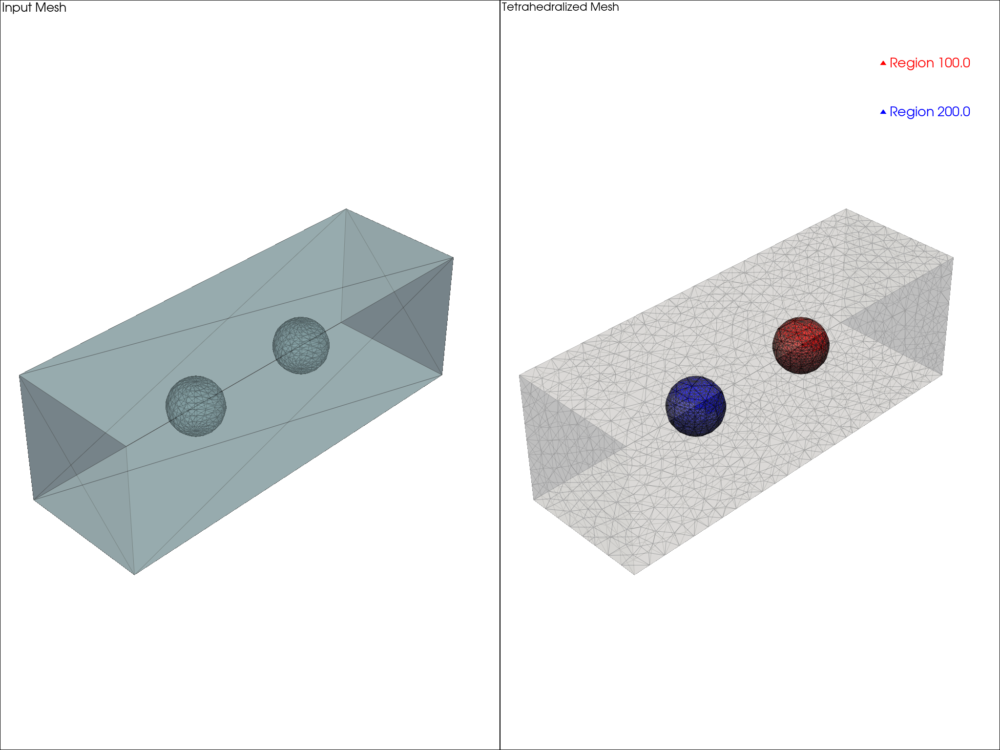

Note
Go to the end to download the full example code.
Regions#
Example of using TetGen to create a tetrahedral mesh with regions.
import numpy as np
import pyvista as pv
import tetgen
# we create a box of air with two spheres inside it
r = 0.1 # 100mm, radius of the spheres
L = 0.5 # 500mm, distance of centers
# this would give a capacitance of around 6.99pF between the two spheres
# create geometries
airbox = pv.Cube(center=[0, 0, 0], x_length=3 * L, y_length=L, z_length=L).triangulate()
sphere1 = pv.Sphere(theta_resolution=16, phi_resolution=16, center=[-L / 2, 0, 0], radius=r)
sphere2 = pv.Sphere(theta_resolution=16, phi_resolution=16, center=[L / 2, 0, 0], radius=r)
# merge the geometries
mesh = pv.merge([sphere1, sphere2, airbox])
# create a plotter
plotter = pv.Plotter(shape=(1, 2))
# plot the input mesh
plotter.add_mesh(mesh, show_edges=True, opacity=0.5, label="Input Mesh")
plotter.add_text("Input Mesh", font_size=10)
# create a subplot for the tetrahedralized mesh
plotter.subplot(0, 1)
plotter.add_text("Tetrahedralized Mesh", font_size=10)
# tetrahedralize the mesh using TetGen
tgen = tetgen.TetGen(mesh)
# add regions to the TetGen object
V_sphere = 4 / 3 * np.pi * r**3
tgen.add_region(100, [-L / 2, 0, 0], V_sphere / 5000) # sphere 1
tgen.add_region(200, [L / 2, 0, 0], V_sphere / 5000) # sphere 2
tgen.add_region(300, [L * 1.5, 0, 0], V_sphere / 100) # airbox
# tetrahedralize the mesh with specified switches
nodes, elem, attrib = tgen.tetrahedralize(switches="pzq1.4Aa")
grid = tgen.grid
# retrieve the region IDs from the attributes
regions = np.unique(attrib[:, 0])
# plot regions with different colors and opacities
for reg_id in regions:
name = f"Region {reg_id}"
reg_mask = attrib[:, 0] == reg_id
subgrid = grid.extract_cells(reg_mask)
if reg_id == 100:
color = "red"
elif reg_id == 200:
color = "blue"
else:
color = "white"
if reg_id < 300:
opacity = 1.0
else:
opacity = 0.25
plotter.add_mesh(subgrid, show_edges=True, color=color, opacity=opacity, label=name)
plotter.add_legend()
plotter.link_views()
# finally show the results
plotter.show()
Total running time of the script: (0 minutes 1.898 seconds)